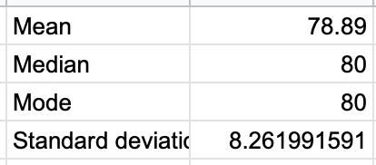
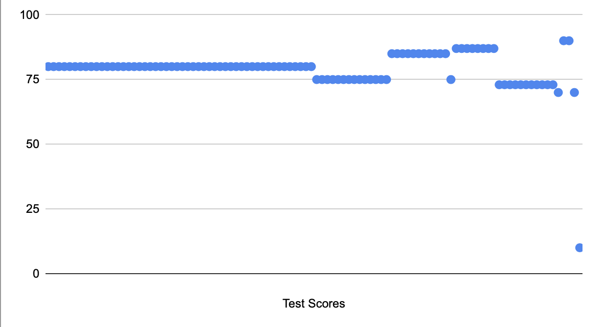
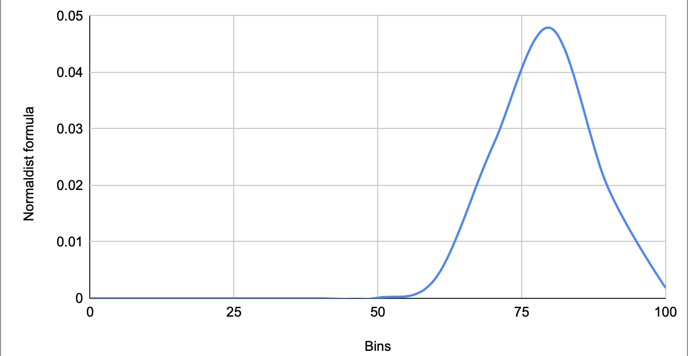
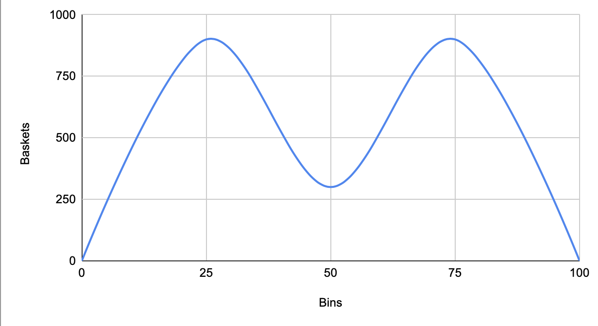

Distributions!
What is a distribution?
A distribution is a set of data that shows all the possible values of a given variable. Specifically, a normal distribution
is a distribution that has the mean, median, and mode all at the same value, and there are equal amounts of the given variable
on either side of the mean.
Parts of a Distribution
- Level- the central tendencies of a distribution such as mean, median, and mode.

- Spread- how far apart the data points are from one another. For example in this dot plot we see that most of the data
are close together except for one that seems oddly low.

- Shape- what the data looks like. Some data is unimodal, with only one peak of data, like in the first line graph.
However, some data is bimodal, with two peaks, like in the second graph.


- Outliers- irregular data points that are found beyond the rest of the data points. For example, the point at 10 on this
dot plot is an outlier because it's way far beyond where the rest of the values in this distribution are.